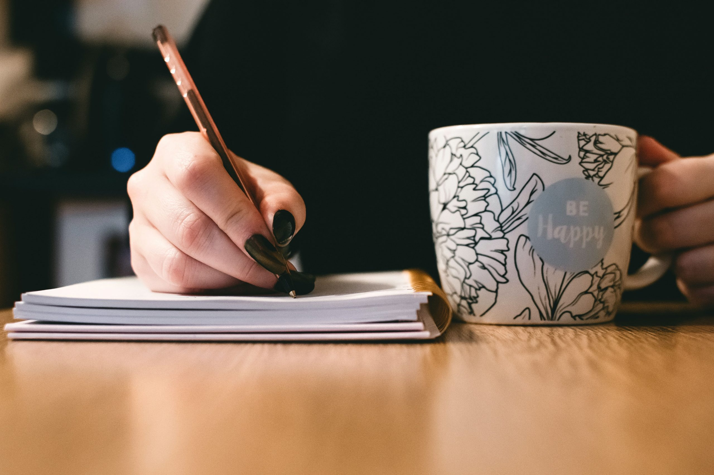

Mis hobbies
“Si mis gustos no dañan a nadie
”y me hacen feliz que hay de malo con eso!. Monkey D. Luffy.

Los hobbies son las alas que le dan vuelo a nuestra imaginación y nos permiten explorar universos desconocidos sin movernos del lugar.
"Los hobbies son mucho más que simples pasatiempos; son ventanas abiertas al alma, que nos permiten descubrir y redescubrir pasiones y habilidades ocultas dentro de nosotros.
Son esas actividades que elegimos no por obligación, sino por el puro placer que nos brindan,
convirtiéndose en el refugio perfecto para el espíritu y el alimento para la creatividad. A través de ellos, navegamos por mares
de tranquilidad en medio del caos cotidiano, encontramos la calma en la tormenta y tejemos conexiones profundas no solo con nosotros mismos, sino también con otros que comparten nuestros intereses.
Muy bien, ahora pasaremos a nombrar algunos de los pasatiempos que realizo, iniciando con el que más me gusta
- Jugar Video Juegos
- Escuchar musica
- Jugar con mis amigos
- escribir historias
- ver peliculas
- ver animes
- Aprender ingles
- Escribir poemas
- Escuchar a la gente
Realmente mis pasatiempos no son muy especiales, pero me gustan y no los cambiara por nada, son lo que mas me hacen yo mismo.
Estos ultimos años me siento feliz de no haberme alejado de ellos, aunque no sean una persona realmente siento que al hacer eso
no me siento solo y me siento feliz, espero nunca cambiar mis gustos y pasatiempos.